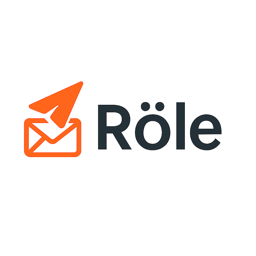
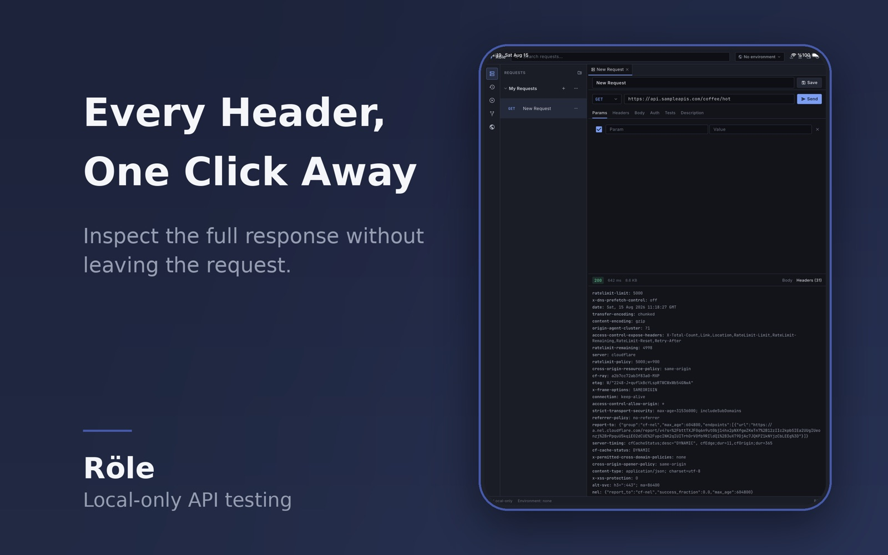
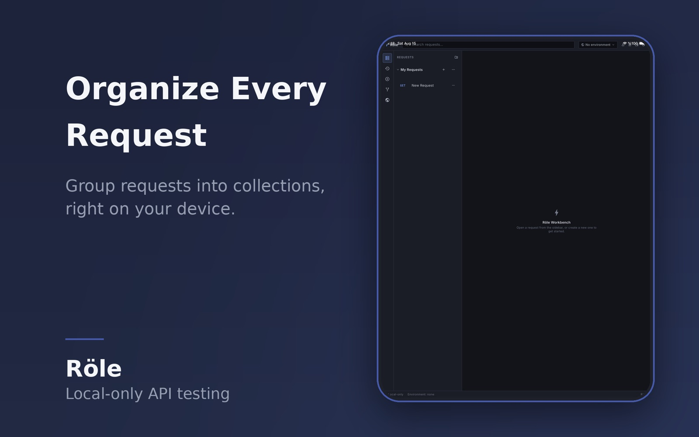
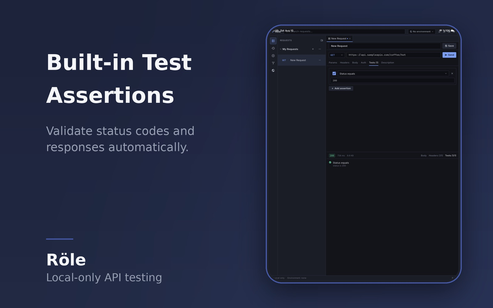

Requests that stay out of your way
Every HTTP method, a full request editor for headers, query parameters and bodies, and a readable response viewer with status, timing, and formatting.

RöleRöle is a local-first API client for Windows, macOS, Linux, Android, and iOS. Collections, environments, history, assertions, and runners live as plain JSON on your machine — no cloud account, no telemetry.
Windows · Linux · macOS · Android · iOS

Built for day-to-day work, not for a dashboard subscription.
Every HTTP method, a full request editor for headers, query parameters and bodies, and a readable response viewer with status, timing, and formatting.
Declarative checks for status, response time, body content, headers, and JSON paths. Results appear per request and roll up in the collection runner.
Group requests, switch environments, and reuse values with {{variable}} substitution — no scripting required.
Run a whole collection sequentially with pass/fail reports, or chain requests into flows that pass the previous response forward.
Your workspace is plain JSON on disk. Back it up, inspect it, or version it with Git. Nothing leaves your device unless you ask.
Bring Postman v2.x collections and environments, or a Röle workspace bundle, with conflict handling when names collide.
Connect a self-hosted role-node server for shared team workspaces, roles, and invitations. Local-only usage works exactly the same, and signing out never touches local data.
Readable responses, visible history, and a workbench that stays out of the way.


Every build is attached to a GitHub Release with SHA-256 checksums and build provenance.
relay-<version>-windows-x64-setup.exe
Per-user installer with in-app updates. A portable .zip is also available.
relay-<version>-x86_64.AppImage
Single-file AppImage with in-app updates, or a .tar.gz for manual installs.
relay-<version>-macos.zip
Unzip and move to Applications. The build is currently unsigned; right-click → Open on first launch.
relay-<version>-android.apk
Sideload the APK, or install through the Play Store when available.
relay-<version>-ios-unsigned.zip
An unsigned build for developers; App Store distribution is in progress.
flutter build <platform> --release
Build it yourself from the repository — see the docs for the pinned SDK and requirements.
Windows and macOS builds are currently unsigned, so SmartScreen and Gatekeeper may show a warning until code signing is configured. Downloads are checksum-verified and provenance-attested.
No. Röle works fully offline with no sign-in. Accounts only exist if you choose to connect a self-hosted role-node server for team workspaces.
In plain JSON files in your OS application-support directory. You can back them up, inspect them, or keep the folder in Git. Nothing is sent anywhere unless you connect a server or check for updates.
On Windows (installer) and Linux (AppImage), yes — the app verifies the release checksum and updates in place. Store builds are updated by their store. macOS currently updates by downloading a new zip.
Yes. Import Postman v2.x collection/environment exports or a Röle workspace bundle, with options to skip, keep both, or overwrite on conflicts.
Yes — MIT licensed, including the self-hosted role-node backend option.